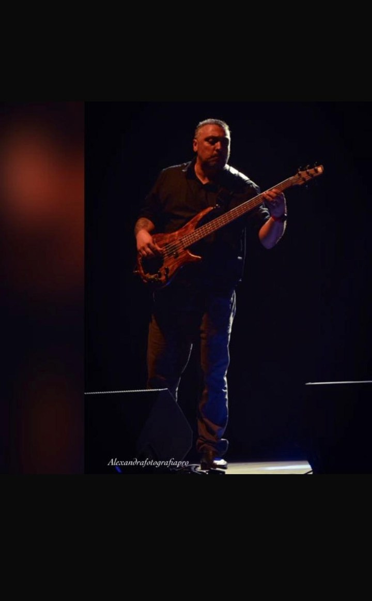
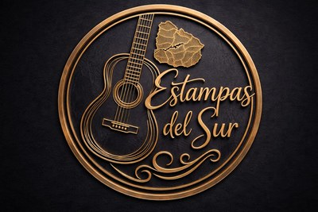
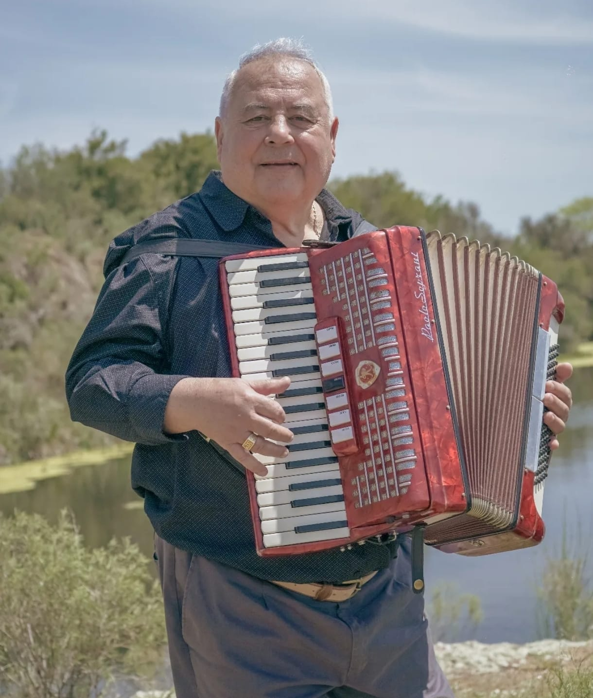
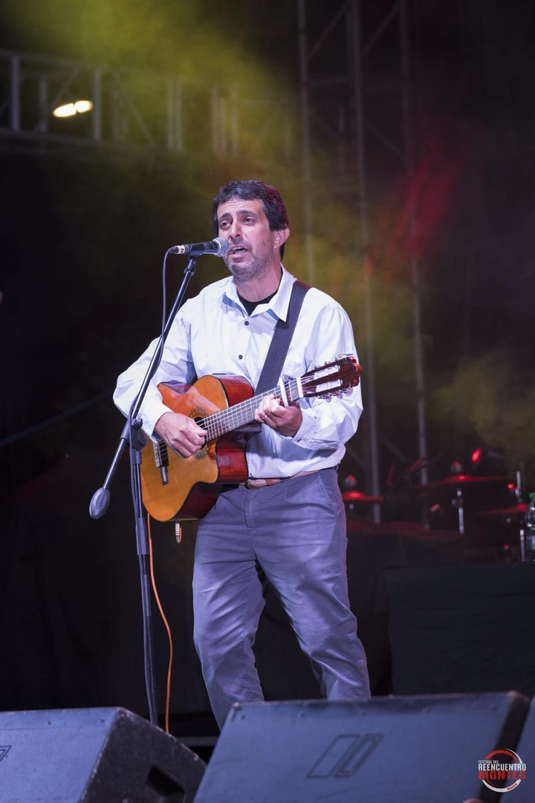
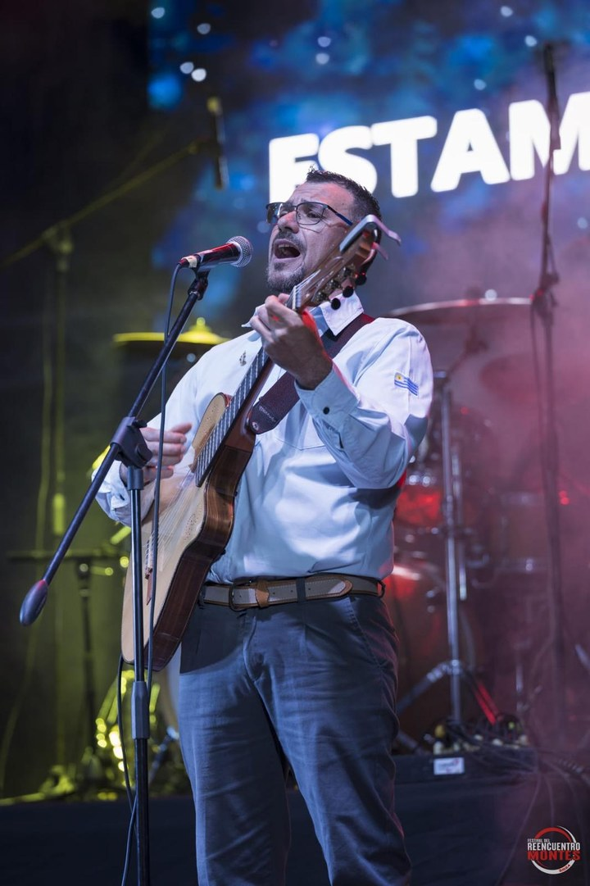
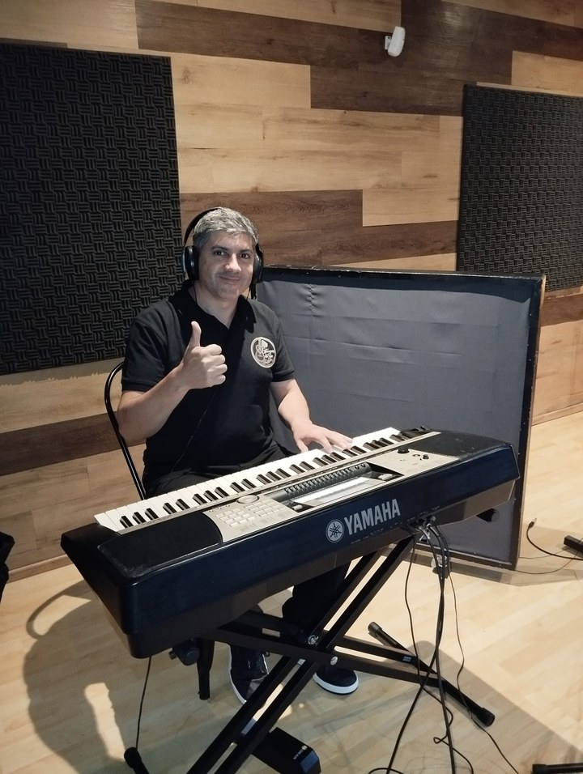
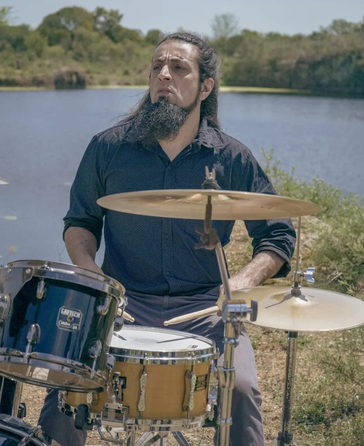

Guillermo Pérez
Bajo

Folklore uruguayo · Pando
Un grupo que se fue construyendo con el tiempo, fiel a una identidad propia: milonga, chamarrita y raíz criolla con un sello que se reconoce.

El Grupo
El origen de Estampas del Sur se remonta a 2011, en Pando, Canelones, con una formación distinta a la actual. Con los años el proyecto se fue consolidando —integrantes que llegaron y otros que siguieron su camino— pero siempre con la misma inquietud: hacer música propia.
Su marca es la autoría. Canciones originales atravesadas por pequeñas «muletillas» —un pasaje, un acorde— que funcionan como firma. Una identidad ligada al campo y al paisaje, que en el escenario se adapta al público entre milonga, chamarrita, polka y cumbia folklórica.
«Siempre mantuvimos la identidad de ser originales, de no copiar y apostar a lo que nosotros escribimos.»
— Saavedra, Estampas del Sur
Los que hacen el canto
Cinco músicos y un sonido que se reconoce. Cada uno con su lugar en el escenario y en las canciones que escribimos.

Bajo

Primera voz · Segunda guitarra

Primera guitarra · Segunda voz

Acordeón y teclados

Batería
Nuestro camino
Nacimos en 2011, en la ciudad de Pando, Canelones, con un objetivo tan simple como profundo: compartir nuestra música, nuestras raíces.
A lo largo del camino llegaron los reconocimientos. En 2016 ganamos el Arco de Córdoba, en Argentina, por nuestra labor cultural. En 2017 nos quedamos con el primer premio en el Festival del Mate, en San José, y con el segundo en el Festival del Olimar, en Treinta y Tres; ese mismo año nos declararon de Interés Cultural y Municipal la Intendencia de Canelones, junto a los Municipios de Pando y Empalme Olmos.
En 2018 editamos nuestro primer CD, «Savia Nueva», con el sello Productora Hipocampo; ese mismo año estrenamos nuestro primer videoclip, «Historias del Pasado». En 2019 representamos a Uruguay y a Canelones en el Festival Nacional de Folklore de Cosquín, con presentaciones en tres de sus principales escenarios, además de varias peñas tradicionales. Cerramos ese año ganando el Certamen de Canción Inédita de la Intendencia de Canelones.
Vinieron nuevos videoclips: «Sacudiendo el Ser Humano» en 2022, «Soy Uruguayo» en 2024 —este último nos valió una nominación a los Premios Graffiti—. Y en 2026 editamos nuestro segundo disco, «Soy Uruguayo», integrado enteramente por canciones de autoría propia.
Seguimos apostando a crecer, llevando nuestra música a nuevos escenarios, atentos a cada oportunidad de seguir recorriendo este hermoso camino musical.
No se pudo reproducir. Probá de nuevo.
No se pudo reproducir. Probá de nuevo.
No se pudo reproducir. Probá de nuevo.
En pantalla
Actuaciones y registros del grupo. Tocá para reproducir.
Camino recorrido
Premios, festivales y escenarios que fueron marcando el rumbo.
Nace el grupo en Pando, Canelones, para compartir su música y sus raíces.
Ganadores en Argentina, en reconocimiento a la labor cultural.
Primer premio en el Festival del Mate (San José) y segundo premio en el Festival del Olimar (Treinta y Tres). Declarados de Interés Cultural y Municipal.
Primer CD, con el sello Productora Hipocampo, y primer videoclip: «Historias del Pasado».
Representando a Uruguay y Canelones en el festival mayor del folklore. Ganadores del Certamen de Canción Inédita de la Intendencia de Canelones.
Finalistas del certamen de videoclip del programa, emitido por Canal 10 y Canal A+V.
Segundo videoclip del grupo.
Tercer videoclip del grupo, con una nominación a los Premios Graffiti.
Segundo disco del grupo, integrado enteramente por canciones de autoría propia.
Dónde vernos
No hay fechas anunciadas en este momento.
Las próximas presentaciones se publican primero en Instagram. Y si querés tenernos en tu festival, peña o evento, escribinos: la agenda se arma con tiempo.
Momentos
Contrataciones
Festivales, peñas, salas y eventos. Trabajamos como un equipo profesional —con roles claros en redes, contrataciones y administración— para que cada presentación esté cuidada de principio a fin.